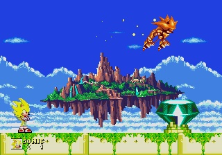
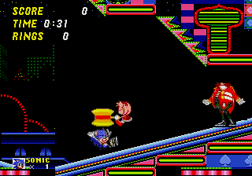
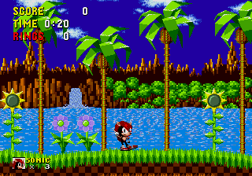
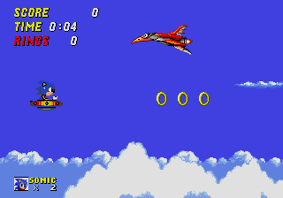
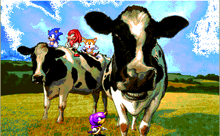
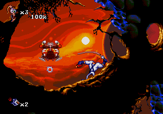

Resemblant of a particular story in a past issue of Sonic The Comic, Super Sonic battles against Hyper Metallix! Love the Sonic Adventure style sprites.
 Well, this is certainly odd, isn't it? I would've expected Sonic getting his own back on Knuckles, but KNUCKLES getting his own back on Knuckles?
 I can just see the titles... 'Knuckles and the encounter with the uncooked peas, mashed potato, beef cutlets...'
 NAH, Amy must have been brainwashed to do that. Eggman sporting dentures from Partinsons Dents Ltd.
 It's come to this. Sonic's tragic death, and Amy is left to cry, while Eggman gets a good days work done!
 Mighty in Sonic 1? o_O Gotta love the sprites and lives counter though, the counter of which was originally by Yuski apparently. Well done!
 Sonic grabs his craft from Wacky Worlds... to cheat in Sonic 2 a little bit.
 This was supposedly going to make it in Legendary SoniChaos, but it didn't. It still looks cool though. Oooh Arrr, It's Ambrosia!
 Eggman proves that he's quite good at the old skipping olympics.
 Uh oh, Sonic took a wrong turn through that green pipe again...
| | | | | | | | | | | | | | | | | | | |